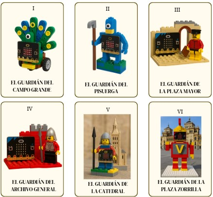

Programación
En esta página aparecen diferentes ideas de personajes y retos que deben ir cumpliendo vuestros personajes, por diferentes niveles de dificultad.
En esta página aparecen diferentes ideas de personajes y retos que deben ir cumpliendo vuestros personajes, por diferentes niveles de dificultad.
Algunas de las ideas de construcción de personajes pueden ser las siguientes:

Nivel 1: Despertar
Nivel 2: Primera misión
Nivel 3: Guardianes avanzados
Obra publicada con Licencia Creative Commons Reconocimiento Compartir igual 4.0